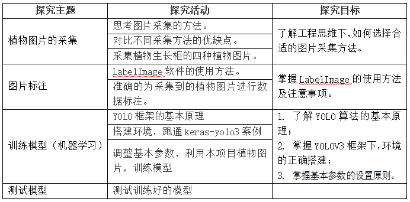

项目二 植物识别
项目情景
随着现代化工业的不断发展，土地资源匮乏和环境污染已成为现代农业面临的重大问题。植物生长柜使用LED灯代替自然光，采用营养液栽培技术，对植物生长发育过程中所需的温度、湿度、光照等进行智能调控，是一种高效无污染的新型农业生产方式。

目前，市场上常见的植物生长柜大多出于人工现场检测阶段，无法实现对植物生长柜中植物实时检测，从而智能调节。因此给植物的监控与生长环境调节带来极大的不便。为了实现对生长柜的智能升级，实时检测植物种类，记录植物生长全周期，及时作出相应的处理。本章将带大家一起完成植物生长柜智能升级的其中一个重要环节——植物识别。
项目导览

项目目标
- 了解目标检测的流程。
- 掌握利用YOLO框架实现植物种类检测功能。
项目规划
植物检测是属于目标检测范畴，它是属于机器学习中的监督学习。因此需要告诉机器有答案的数据，我们通过采集植物图片，进行数据标注，从而获得有答案的数据。目标检测有很多成熟的算法、框架，我们不需要自己搭建神经网络，本章将选择目前效果比较好的YOLO实例，进行我们自己的植物种类学习，实现检测功能。
